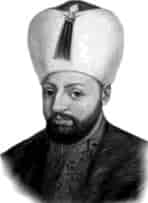

I. AHMET
Babası : III. Mehmet
Doğumu : 18 Nisan 1590
Vefatı : 22 Kasım 1617
Saltanatı : 1603 - 1617 (14 yıl)
I. Ahmet, Kanuni’den sonra devlet işleri ile bizzat kendisi uğraşan çok gayretli bir padişahtı. Çok sade giyinirdi. Çocuk denecek yaşlarında bile almış olduğu kararlar mükemmeldi. Daima ilim ve irfan sahibi büyük zatlarla istişare eder, onlara akıl danışırdı. I. Ahmet, on dört yaşında padişah oldu.
On dört yıl padişahlık yaptı ve 14. Osmanlı padişahıdır. Çok mükemmel bir tahsil görmüştür. Aynı zamanda iyi bir şairdi. “Bahti” mahlasıyla yazdığı şiirlerinden oluşan bir divanı vardır.
Dinine çok bağlı bir Müslüman hatta büyük bir veli idi. Altı büyük minareli ve on altı şerefeli Sultanahmet Camii’ni bina ettirdi. Peygamberimiz’e bağlılığı o kadar ileri idi ki, onun mübarek ayak izlerinin resmi içine bir şiir yazmış ve o şiiri kavuğunda ölünceye kadar taşımıştır. O şiir ise şudur:
N’ola tacım gibi başımda götürsem daim
Kadem-i resmini ol Hazreti şahı Rusülün.
Gül-i Gülzâri Nübüvvet, o kadem sahibidir.
Ahmetâ durma yüzün sür kademine ol gülün.
Kâbe’nin örtüleri bu devirde İstanbul’dan gitmeye başladı. O zamana kadar Mısır’dan gönderiliyordu. Sultan Ahmet tahta çıktığında, Osmanlı Devleti, içte Celâli İsyanları, doğuda İran ve batıda Almanya ve müttefikleri ile savaş halinde idi. Almanya fena şekilde hırpalandı ve barış istedi. Zitvadoruk Antlaşması imzalandı. 1611’de Celâli İsyanları tamamen bastırıldı. Sıra üçüncü gaile olan İran’a geldi. Nihayet İran ile de antlaşma yapıldı. Akdeniz’de çok mühim deniz muharebeleri kazanıldı. 1605’de Estergon ve Uyvar fethedildi. Aynı yıl son derece başarılı bir Avusturya Seferi yapıldı. Macaristan kralına taç giydirildi. Denizlerde Malta seferi yapıldı. Sultan Ahmet 1617’de vefat etti. Sultanahmet Camii yanındaki türbesine defnedildi.
Erkek çocukları: II. Osman, IV. Murat, Sultan İbrahim, Beyazıt, Süleyman, Kasım, Mehmet, Hasan, Selim, Hanzâde, Ubeyde.
Kız çocukları: Gevherhan, Ayşe, Fatma, Atike.